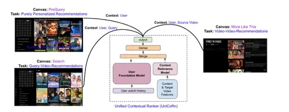

В ещё одном интересном докладе с ACM RecSys разработчики из Netflix делятся опытом объединения моделей для персонализированного поиска и рекомендаций. В статье есть несколько предпосылок. Во-первых, обслуживать одну модель в продакшене проще, чем несколько. Во-вторых, качество объединённых моделей может быть выше.
Представленная архитектура обучается на трёх задачах: персональные рекомендации, персонализированный поиск и рекомендации к текущему видео. Для этого в нейросетевой ранкер подаётся поисковой запрос, ID текущей сущности (видео), ID пользователя, страна и ID задачи, которая решается (поиск или одно из ранжирований). Также в ранкер подаётся эмбеддинг истории действий пользователя, полученный так называемой "User Foundation Model", детали которой не раскрываются ни в тезисах с конференции, ни в ответе на прямой вопрос после устного доклада.
Чтобы заполнить эмбеддинги сущностей, которые отсутствуют (например, поисковые запросы в задаче рекомендаций), авторы провели серию экспериментов, по итогам которых решили, что в задаче поиска лучше вместо контекста подставлять отдельное нулевое значение, а в задаче рекомендаций — использовать название текущего видео вместо строки запроса.
Авторы отметили, что до внедрения этого подхода на этапе, когда пользователь вводил несколько первых букв в поисковом запросе, показывались результаты, которые не соответствовали интересам пользователя, так как поиск не был полностью персонализированным. Сейчас проблему удалось решить. Также в докладе подтверждают, что логика отбора кандидатов для поиска и рекомендаций оказалась ожидаемо разной.
Результаты — рост на 7% в офлайн-качестве в поиске и на 10% — в рекомендациях. Это, по всей видимости, достигается за счёт регуляризации, возникающей при обучении на несколько задач и за счёт перехода к полной персонализации в поиске.
@RecSysChannel
Разбор подготовил
